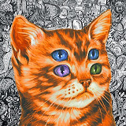

Preamble
If you're reading this, you know something's up. You realised that Zuck and Elon may not be as trustworthy as they seem to be, and that the internet is an overall unsafe place, full of harmful ads and trackers. It's okay to be paranoid about this kind of stuff. Nobody wants to be spied on and have their information sold to a data broker or the Chinese Communist Party. You want privacy, you want to know what's happening to your personal data and where it goes. Now, we're not talking about being anonymous here, that's too difficult, perhaps impossible. We're talking about being free from the clutches of Google, Amazon and other malicious entities that materialise us.
I once read TikTok's entire privacy policy to analyse it, in order to show my friends, who at the time were frequent users of the Chinese spyware, that there's more stuff happening behind the scenes that they know about. Typing rhythm and patterns were among many things that shocked them, and subsequently helped them quit the app altogether.
If you think about it, online privacy is strongly tied to our mental health. By caring about staying low-key and keeping exposure to such addicting services like TikTok or Instagram to a minimum, we're able to stay sane. It's because social media, and many other parts of the internet, have become traps, psychological weaponry that is constantly deployed and ready to fire. I still find myself scrolling mindlessly on various sites, obviously, it happens. But all the major social media apps and websites are exploiting this to the fullest. Tired of scrolling through your normal instagram feed? Have some reels! Tired of reels? Check your explore page out! Tired of that, too? Hop on facebook! Etc. etc....
Just like our attention spans, our dopamine levels are equally messed up, which makes it
more and more difficult to take the correct pill and change your internet browsing lifestyle.
Who would want to go these extra miles just so Xi Jinping doesn't know exactly where they live?
Like with any addiction, you have to gradually put away what you're using. Don't do it
cold-turkey, let your mind do this peacefully.
With all that stuff out of the way, let me guide you through the wonderful world of online privacy.
Thank Yous
I'd like to thank Richard Stallman, saint of the Church of Emacs, my idol and inspiration.
Without this man we wouldn't have GNU/Linux, the FSF, and many tools and free software we use every single day.
I'm specifically thanking him for his beloved character and attitude, as well as his unparalleled dedication to the libre movement.
I really recommend reading Stallman's Free Software, Free Society, as it contains a lot of interesting information alongside the basics.

I would also like to thank Kenny, the Mental Outlaw.
His videos are very informative, wether they regard linux, OpSec or cooking!
He has an entire series of videos dedicated to the topic of online privacy.

Introduction
According to Wikipedia, privacy is the ability to seclude information about oneself.
HTML Inline and Block Elements
HTML elements can be broadly categorized into one of two categories: